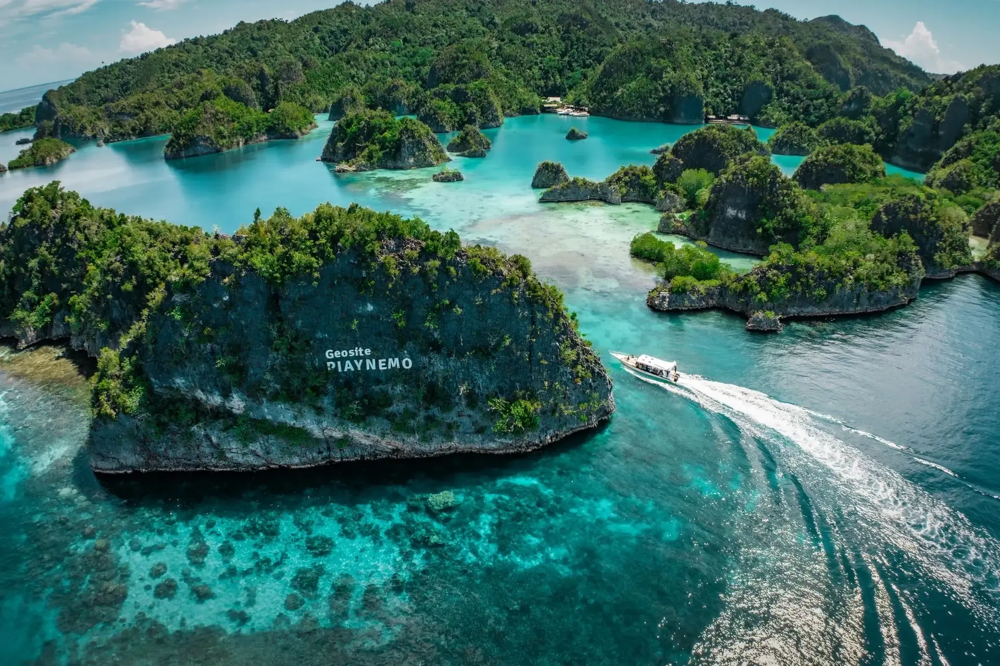

Giving Back
Built from the forest. Giving back to the forest.


Giving Back to the Forest.
WAOW 2 is being built from Indonesian wood. We
believe that taking from nature comes with a
responsibility to give something back.
That's why we are working with Good Forest
Indonesia to restore forests and replant trees in
Indonesia, with the aim of giving back what was used
to build WAOW 2 and continuing to support
restoration beyond the boat itself.
Forest
Indonesia

For what
comes next
Our Promise
More Than Planting Trees
Restoration is not simply about putting trees in the ground. It is about
supporting forests, biodiversity and the communities who depend on
them.
Together with Good Forest Indonesia, we are supporting long-term
restoration through reforestation, agroforestry and work with local
farmers.
The People Behind the Forest
A forest is more than trees.
Our partnership supports local farmers and communities, working
with their knowledge, their land and their needs to create restoration
that can last.
Planting Is Only the Beginning
A tree planted today is the beginning of a much longer story.
We want WAOW 2's commitment to the forest to continue long after
she first touches the water.

From sea
to forest
Ready for your next descent?
32 ways into Indonesia.
And an entire world below the surface.